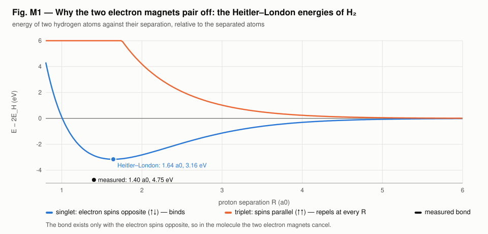
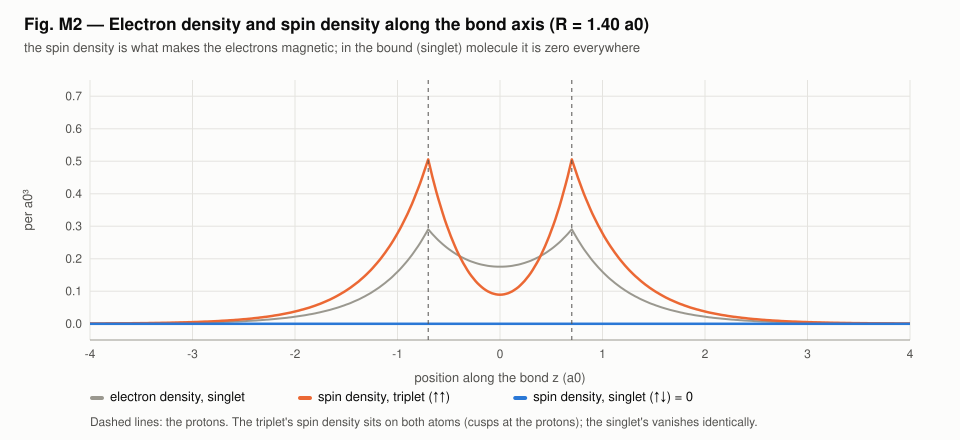
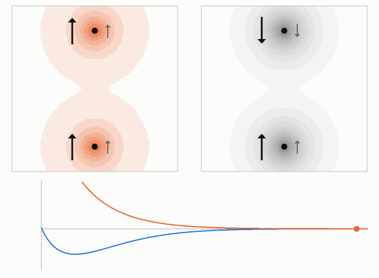
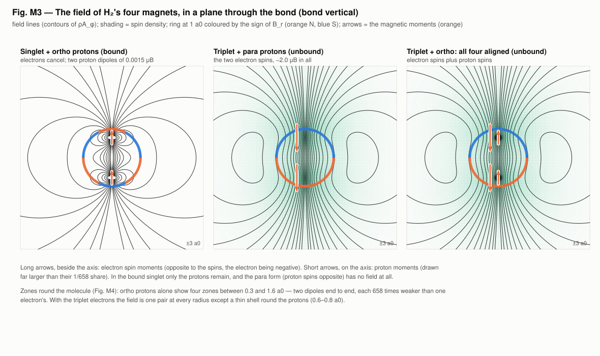
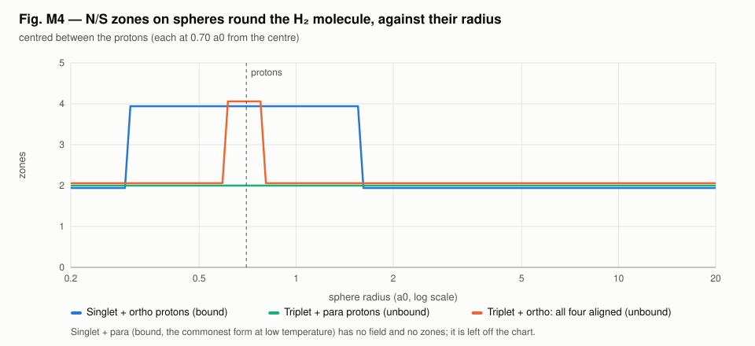

<!-- SPDX-License-Identifier: GPL-3.0-only OR LicenseRef-kronspice-Commercial -->
<!-- Copyright (C) 2026 Franklin Amador -->
<meta charset="utf-8">
<meta name="viewport" content="width=device-width, initial-scale=1, viewport-fit=cover">
<title>Hydrogen Molecule Magnets</title>
<meta name="claude:viewport-fit-sides" content="cover">
<link rel="preconnect" href="https://fonts.googleapis.com">
<link rel="stylesheet" href="https://fonts.googleapis.com/css2?family=IBM+Plex+Sans:ital,wght@0,400;0,500;0,600;1,400&family=IBM+Plex+Mono:wght@400;500&family=IBM+Plex+Serif:wght@500;600&display=swap">
<style>
/* Layout: one reading column (~68ch) with figures allowed to run wider; a lab-report masthead; sections follow the run's Parts. */
:root {
  --bg: #f6f7f8;
  --paper: #ffffff;
  --fg: #16191d;
  --muted: #59606a;
  --rule: #dde1e6;
  --accent: #2a78d6;   /* S, and the figures' blue */
  --north: #d9582a;    /* N, the figures' orange */
  --code-bg: #eef1f4;
  --display: "IBM Plex Serif", Georgia, "Times New Roman", serif;
  --body: "IBM Plex Sans", "Segoe UI", system-ui, -apple-system, sans-serif;
  --mono: "IBM Plex Mono", ui-monospace, "Cascadia Mono", Consolas, monospace;
}
@media (prefers-color-scheme: dark) {
  :root:not([data-theme="light"]) {
    --bg: #111418; --paper: #181c21; --fg: #e6e9ed; --muted: #9aa3ad; --rule: #2b3139;
    --accent: #5b9be6; --north: #ee7f52; --code-bg: #1f252c; color-scheme: dark;
  }
}
:root[data-theme="dark"] {
  --bg: #111418; --paper: #181c21; --fg: #e6e9ed; --muted: #9aa3ad; --rule: #2b3139;
  --accent: #5b9be6; --north: #ee7f52; --code-bg: #1f252c; color-scheme: dark;
}
* { box-sizing: border-box; }
body {
  background: var(--bg); color: var(--fg); font-family: var(--body);
  font-size: 1rem; line-height: 1.6; margin: 0;
  padding-left: max(16px, env(safe-area-inset-left, 0px));
  padding-right: max(16px, env(safe-area-inset-right, 0px));
}
main { max-width: 68rem; margin: 0 auto; padding-block: 2.5rem 4rem; display: grid; gap: 2.75rem; }
.col { max-width: 44rem; display: grid; gap: 0.9rem; min-width: 0; }
header.mast { display: grid; gap: 0.6rem; border-bottom: 1px solid var(--rule); padding-bottom: 1.6rem; }
.eyebrow { font-family: var(--mono); font-size: 0.78rem; letter-spacing: 0.08em; text-transform: uppercase; color: var(--muted); }
h1, h2, h3 { font-family: var(--display); font-weight: 600; line-height: 1.2; text-wrap: balance; margin: 0; }
h1 { font-size: clamp(1.9rem, 4.5vw, 2.7rem); }
h2 { font-size: 1.55rem; }
h3 { font-size: 1.12rem; font-family: var(--body); font-weight: 600; }
p { margin: 0; }
.lede { font-size: 1.1rem; color: var(--muted); max-width: 44rem; }
blockquote { margin: 0; padding: 0.2rem 0 0.2rem 1rem; border-left: 3px solid var(--north); font-family: var(--display); font-size: 1.15rem; font-style: italic; }
.meta { display: flex; flex-wrap: wrap; gap: 0.4rem 1.4rem; font-family: var(--mono); font-size: 0.82rem; color: var(--muted); }
.n { color: var(--north); font-weight: 600; }
.s { color: var(--accent); font-weight: 600; }
section { display: grid; gap: 1.2rem; }
.part { display: flex; align-items: baseline; gap: 0.8rem; }
.part .num { font-family: var(--mono); font-size: 0.85rem; color: var(--muted); }
ul { margin: 0; padding-left: 1.2rem; display: grid; gap: 0.35rem; }
code { font-family: var(--mono); font-size: 0.88em; background: var(--code-bg); padding: 0.05em 0.35em; border-radius: 3px; }
pre { margin: 0; background: var(--code-bg); padding: 0.9rem 1rem; border-radius: 6px; overflow-x: auto; font-family: var(--mono); font-size: 0.85rem; line-height: 1.5; }
.tablewrap { overflow-x: auto; }
table { border-collapse: collapse; width: 100%; font-size: 0.92rem; font-variant-numeric: tabular-nums; }
th, td { text-align: left; padding: 0.5rem 0.75rem 0.5rem 0; border-bottom: 1px solid var(--rule); vertical-align: top; }
th { font-weight: 600; font-size: 0.8rem; letter-spacing: 0.03em; color: var(--muted); }
td.num { font-family: var(--mono); font-size: 0.88rem; white-space: nowrap; }
figure { margin: 0; display: grid; gap: 0.55rem; }
figure .plate { background: #fcfcfb; border: 1px solid var(--rule); border-radius: 6px; padding: 0.4rem; overflow-x: auto; }
figure img { display: block; width: 100%; height: auto; max-width: 100%; }
figcaption { font-size: 0.88rem; color: var(--muted); max-width: 52rem; }
figcaption b { color: var(--fg); font-weight: 600; }
.pair { display: grid; grid-template-columns: repeat(auto-fit, minmax(min(100%, 20rem), 1fr)); gap: 1.2rem; }
.pair figure .plate { padding: 0; }
.status { display: grid; gap: 0.5rem; padding: 1.1rem 1.25rem; background: var(--paper); border: 1px solid var(--rule); border-left: 4px solid var(--accent); border-radius: 6px; }
.status .label { font-family: var(--mono); font-size: 0.78rem; letter-spacing: 0.08em; text-transform: uppercase; color: var(--muted); }
footer { border-top: 1px solid var(--rule); padding-top: 1.4rem; display: grid; gap: 0.8rem; font-size: 0.9rem; color: var(--muted); }
a { color: var(--accent); }
a:focus-visible { outline: 2px solid var(--accent); outline-offset: 2px; }
@media (prefers-reduced-motion: reduce) { .gif-note::after { content: " (animations play as GIFs; pause them in your browser if needed)"; } }
</style>

<main>
  <header class="mast">
    <span class="eyebrow">kronspice · examples/hydrogen_poles · hypothesis H34, Part 3 · 5 November 2026</span>
    <h1>Two hydrogen atoms, four magnets</h1>
    <p class="lede">Russell's two touching spheres read as two hydrogen atoms bonding into H₂. The molecule holds four small magnets, two electron spins and two proton spins. Which of them survive the bond, and what pole pattern they make.</p>
    <div class="meta"><span>Status: <b>bounded</b></span><span>Bound molecule: electron magnets cancel</span><span>Companion: <a href="hydrogen_atom_report.html">one hydrogen atom</a></span></div>
  </header>

  <section>
    <div class="col">
      <h2>Why the electron magnets pair off</h2>
      <p>Two hydrogen atoms are described by the Heitler–London wavefunction: one electron on each proton, with the exact one- and two-centre integrals. The electrons can have their spins opposite (singlet) or parallel (triplet).</p>
      <ul>
        <li><b>Singlet binds.</b> R<sub>e</sub> = 1.6425 a0, D<sub>e</sub> = 3.156 eV, the classic Heitler–London result. The measured bond is 1.40 a0 and 4.748 eV; the simple wavefunction gets two thirds of the binding.</li>
        <li><b>Triplet repels</b> at every separation: +10.1 eV at 1.4 a0, +4.19 eV at 2 a0, +0.24 eV at 4 a0.</li>
      </ul>
    </div>
    <figure>
      <div class="plate"></div>
      <figcaption><b>Fig. M1.</b> Energy of two hydrogen atoms against their separation. Only the singlet, spins opposite, has a well; the measured bond is marked.</figcaption>
    </figure>

    <figure>
      <div class="plate"></div>
      <figcaption><b>Fig. M2.</b> Along the bond axis. The spin density is what makes the electrons magnetic. The triplet's sits on both atoms; the singlet's is zero at every point, because its spin part gives ⟨σ<sub>z</sub>⟩ = 0 for each electron.</figcaption>
    </figure>

    <figure>
      <div class="plate"></div>
      <figcaption><b>Animation.</b> Two atoms brought from 7 a0 to the bond and back. Left, the triplet (electron spins ↑↑, long arrows), its spin density in orange. Right, the singlet (↑↓), its electron density in grey and no spin density. Short arrows are the proton spins (ortho ↑↑ left, para ↑↓ right). Below, the energies with the current separation: <span class="s">blue singlet</span> falls into its well, <span class="n">orange triplet</span> climbs.</figcaption>
    </figure>
  </section>

  <section>
    <div class="col">
      <h2>The field of the four magnets</h2>
      <p>The electron field comes from the triplet spin magnetization, summed as current loops. Inside the cloud it is evaluated on cell corners, where the neighbouring loops' near fields cancel, and interpolated (grid h = 0.05 against 0.025 agrees to 3.4×10⁻⁴). The proton spins are point dipoles at the nuclei. All spins are quantized along the bond, at the measured bond length 1.4011 a0.</p>
      <div class="tablewrap"><table>
        <thead><tr><th>Spin arrangement</th><th>∫ spin density</th><th>Moment (μ<sub>B</sub>)</th><th>Bound?</th><th>Zones round the molecule</th></tr></thead>
        <tbody>
          <tr><td>Singlet electrons + para protons</td><td class="num">0</td><td class="num">0</td><td>yes</td><td>no field at all</td></tr>
          <tr><td>Singlet electrons + ortho protons</td><td class="num">0</td><td class="num">+0.00304</td><td>yes</td><td>4 zones from 0.3 to 1.6 a0, 2 beyond</td></tr>
          <tr><td>Triplet electrons + para protons</td><td class="num">2.0001</td><td class="num">−2.00232</td><td>no</td><td>2 zones at every radius</td></tr>
          <tr><td>Triplet + ortho: all four aligned</td><td class="num">2.0001</td><td class="num">−1.99928</td><td>no</td><td>2 zones, except 4 in a thin shell round the protons (0.6–0.8 a0)</td></tr>
        </tbody>
      </table></div>
    </div>
    <figure>
      <div class="plate"></div>
      <figcaption><b>Fig. M3.</b> Field lines in a plane through the bond, over the spin density. Ring at 1 a0 coloured by B<sub>r</sub>. Orange arrows are the magnetic moments: long ones beside the axis the electron moments (opposite to their spins), short ones on the axis the protons', drawn far larger than their 1/658 share.</figcaption>
    </figure>

    <figure>
      <div class="plate"></div>
      <figcaption><b>Fig. M4.</b> Zones on spheres centred between the protons. Ortho protons alone make four zones near the molecule, two dipoles end to end. The triplet electrons make one pair at almost every radius.</figcaption>
    </figure>

  </section>

  <section>
    <div class="col">
      <div class="status">
        <span class="label">What it means for H34</span>
        <p>The two-atom picture does hold four small magnets, and with all four aligned the molecule would carry about 2 μ<sub>B</sub>. But that arrangement needs the electron spins parallel, and the triplet does not bind. The bond forms only with the spins opposite, and then the electron magnets cancel exactly, at every point.</p>
        <p>What is left are the proton magnets, 658 times weaker. Ortho-H₂ (proton spins parallel) shows a four-zone pattern near the protons. Para-H₂, the commonest form at low temperature, has no magnetic field at all. The rotating molecule's own small moment (ortho, J = 1) is not modelled here.</p>
      </div>
    </div>
  </section>

  <footer>
    <div class="col">
      <span class="eyebrow">Reproduce</span>
      <pre>go run ./examples/hydrogen_poles -svg examples/hydrogen_poles/viz
go test ./examples/hydrogen_poles</pre>
      <span class="eyebrow">Sources</span>
      <ul>
        <li>W. Heitler, F. London, <i>Z. Phys.</i> 44, 455 (1927); Y. Sugiura, <i>Z. Phys.</i> 45, 484 (1927); J. C. Slater, <i>Quantum Theory of Molecules and Solids</i> I (1963), App. 6.</li>
        <li>W. Kołos, L. Wolniewicz, <i>J. Chem. Phys.</i> 49, 404 (1968): the H₂ bond to spectroscopic accuracy.</li>
        <li>M. Abramowitz, I. A. Stegun, <i>Handbook of Mathematical Functions</i>, Table 5.1 (exponential integral).</li>
        <li>W. Russell, “Analysis of the Octave Bar Magnet” (painting). The hypothesis source.</li>
      </ul>
    </div>
  </footer>
</main>
